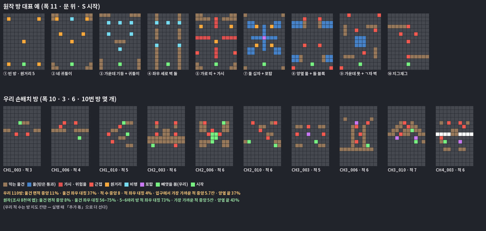

2026-10-22 조사 — 원본 30방 장 40개 + 경험치 표 · 지형 재사용 / 우리 15방 골격 · 레벨업 코드 실측. 원본에서는 구조 · 수치만 가져온다. PD 확인 전에는 구현하지 않는다. 2단계(그림 반영 · 최종 녹화)가 끝나는 대로 시작한다.
조사 원문: step3_research/origin.md · step3_research/ours.md
방 구조는 원작을 그대로, 겉모습만 우리 컨셉. 손으로 다시 그리지 않고 원작 맵 데이터(맵 11,422개 · 지형 1,225가지)를 변환기로 옮긴다 — Projects/AVSR/Tools/origin_rooms.py → Rooms/origin_rooms.json.
| 무엇 | 원작 | 우리로 옮기는 법 |
|---|---|---|
| 30방 순서 | 30방 장 100개 중 72개가 똑같은 골격 — 방 번호마다 지형 묶음이 정해져 있다: 1–4 M0 · 6–8 M1 · 9 M7 · 11–14 M2 · 16–18 M3 · 19 · 29 M6 · 21–24 M4 · 26–28 M5 · 보스방 B0 | 우리 30방 골격의 전투방이 같은 번호 원작 방의 지형 묶음에서 뽑는다. 앞 방은 작고 쉬운 지형, 11번부터 21줄 큰 방이 섞이는 흐름이 그대로 온다 |
| 방 크기 | 가로 11칸 · 세로 15 / 21칸(큰 방은 카메라가 따라 올라간다) | 방 폭 10 m 를 11칸으로 나눈다(한 칸 0.91 m) — 가운데 열 · 좌우 대칭이 원작과 똑같다. 사거리 · 속도는 미터라 그대로. 세로는 원작 줄 수 그대로(카메라 세로 따라가기는 이미 있다) |
| 물건 | 돌 · 나무(몸 · 탄 막음) · 물(몸 막음 · 탄 통과) · 울타리 · 가시 · 함정 레일 · 풀 | 칸 하나하나 그대로 놓는다. 하는 일도 원작 그대로. 그림은 무대마다 우리 컨셉으로 새로 — 원작이 테마마다 물건 모양을 몇 가지 썼는지 조사 중(step3_research/origin_obstacles.md), 같은 수만큼 서로 다른 모양을 받는다 |
| 몬스터 자리 | 맵의 몬스터 칸 그대로 · 방마다 마리 수 | 원작 칸 그대로 세우고, 그 챕터 몬스터를 역할(근접 · 원거리 · 비행 · 포탑)로 채운다. 마리 수도 원작 그대로(「추가 몫」 끔) |
| 같은 판 안 | 쓴 맵은 다 쓸 때까지 다시 안 나온다 | 같게 |
우리에게만 있는 기믹(레이저 문 · 컨베이어 · 피스톤 …)은 원작 칸에 없으므로 틀 방에는 넣지 않는다. 원작 물건과 하는 일이 겹치는 것은 그 자리 그림으로 쓰고, 나머지는 조사 결과와 함께 PD 에게 묻는다.
지금 방 지도는 칸에 몬스터 이름을 박는다(「이 칸에 해골, 저 칸에 박쥐」). 그래서 챕터마다 방 11장을 새로 그리고, 11챕터부터는 그릴 지도가 없다. 틀은 칸에 이름 대신 자리 역할만 적은 방이다. 게임이 그 챕터 몬스터 목록에서 맞는 역할을 골라 채운다.
지금: . . h . . k . h = 해골, k = 고철 전갈(이름이 박힘)
틀: . . 근 . . 원 . 근 = 근접 자리, 원 = 원거리 자리
→ 1챕터면 해골 · 고철 전갈, 7챕터면 돌격 고릴라 · 저격 전갈이 선다
원작도 같다 — 맵 8천여 개가 지형 841가지에서 나오고, 주 챕터 160장 중 122장은 새 지형이 하나도 없다(몬스터만 바뀜).

| 잣대 | 원작(8천여 맵) | 우리(110방) |
|---|---|---|
| 방당 적 | 5~6마리가 기본(1~4방 2~5 · 뒤 방 6~11) | 지도 칸 중앙 8 + 실행 때 「추가 몫」 — 뒤 챕터 10~12 |
| 물건 면적 | 중앙 8% · 위 10% 가 19% | 중앙 11% |
| 물건 좌우 대칭 | 56%(거의 같음까지 75%) | 37% |
| 적 배치 좌우 대칭 | 73%(좌우 짝 2쌍 이상 62%) | 4% |
| 적이 서는 곳 | 위 41% · 가운데 40% · 아래 20% · 양옆 끝 43% · 귀퉁이 27% · 네 사분면 모두 57% | 방 가운데 띠(4~10줄)에 몰림 · 양옆 끝 37% · 위 · 아래가 비어 있음 |
| 종류별 자리 | 근접 위 · 가운데(아래 5%) · 원거리 양옆 끝 · 귀퉁이 · 포탑 물건 옆 63% · 비행 물 · 벽 사이 | 방마다 손으로 정함(규칙 없음) |
| 입구 | 아래 2줄 × 가운데 3칸 100% 빔 · 가장 가까운 적 중앙 5칸(최소 2) | 가장 가까운 적 중앙 5.7칸 |
| 물건 모양 묶음 | 물 위주 40% · 네 귀퉁이 · 가운데 덩어리 · 가로 띠 · 양옆 벽 복도 · 빈 방 각 8~9% · 흩뿌린 기둥 6% · 세로 벽 3% · 십자 2% · 가시만 · 지그재그 · 가시 있는 맵 19% | 엄폐 덩어리 · 낮은 벽 위주 |
| 챕터가 바뀌면 | 묶음 비율 그대로 — 지형을 다시 쓰고 몬스터만 바꾼다 | 챕터마다 새로 그림 |
버릇 = 평소 무기질 말고 대장만 하는 행동 하나. 예: 일반 갱스터는 「다가와 3연발」만 한다. 대장 갱스터는 3연발 뒤 옆으로 한 걸음 비켜 내 탄을 피하고 다시 쏜다. 무기는 같은데 싸움이 한 박자 달라진다.
일반 몬스터로 나온 호스트는 지금 그대로 단순하게 — 「저 몸을 타면 저렇게 싸운다」를 미리 보여 주는 몫이다. 대장 버릇도 그 몸 무기의 연장선에서만 고른다(타면 쓸 수 없는 엉뚱한 짓 금지). 2단계 몬스터 성질을 다시 쓰므로 새 그림은 0. 대장은 여기에 크기 · 체력 막대 · 등장 예고로 「보스」임을 보인다.
| 호스트 | 버릇(몬스터 성질) | 호스트 | 버릇 |
|---|---|---|---|
| 갱스터 | 3연발 뒤 옆걸음 | 사슬 닌자 | 띠 예고 돌진 |
| 폭력배(토미건) | 부채꼴 연사 뒤 엄폐로 | 아마존 | 도약 착지 충격파 |
| 호퍼 | 도약해 자리 바꾸고 쏘기 | 야구선수 | 돌진 · 친 탄 되받아치기 |
| 호퍼(기관단총) | 지그재그로 다가오며 연사 | 구루 | 떠서 고리 탄 |
| 코만도(기관총) | 반 바퀴 회전 연사 | 로봇 | 십자 · 팔방 회전 사격 |
| 코만도(수류탄) | 박격(내 자리에 원) | 흡혈귀 | 체력 절반에 박쥐 둘 |
| 코만도(미사일) | 느린 유도탄 | 설녀 · 청룡 | 얼음 원소(맞으면 느려짐) |
| 코만도(레이저) | 조준선 저격 | 드라군 · 샐러맨더 | 불 · 독 원소(착지 불 · 독 자국) |
| 닌자 | 사라졌다 옆에서 베기 | 마법사 · 영매 | 떠오른 탄이 하나씩 겨눔 · 고리 두 겹 |
| 원작 칸 | 몸 | 탄 | 그 밖 | 우리 지금 | 할 일 |
|---|---|---|---|---|---|
| 돌 · 나무 | 막음 | 막음 | 엄폐 | 블록 · 기둥 · 큰 덩어리 | 그대로 · 무대마다 그림 |
| 물 | 막음 | 통과 | 원거리 몹이 건너편에서 쏨 | 도랑 · 구덩이(있음) | 틀의 40% 가 물 위주 — 무대마다 그림(오수 · 냉각수 · 독 웅덩이 …) |
| 울타리 | 막음 | 통과 | 낮은 칸막이 | 파이프 난간 · 낮은 엄폐 | 탄 통과로 맞추는지 확인 |
| 가시 | 통과 | 통과 | 밟으면 피해 | 바닥 배수구 가시(시간차) | 늘 서 있는 가시 추가 · 1챕터는 없음 유지 |
| 함정 레일 | — | — | 레일 따라 오가는 톱날 | 회전 톱날(제자리) | 레일 따라 움직이는 형 추가 |
| 풀 | 통과 | 통과 | 꾸밈 | 없음 | 바닥 꾸밈으로 · 우선순위 낮음 |
물건 그림은 우리 컨셉으로 새로 받는다 — 순서는 스킬 fx-art-pipeline: 무대 하나로 「틀 방 완성 화면」 코덱스 자유 시안 → PD 선택 → 그 화풍으로 물건 부품 발주.
| 무엇 | 원본 30방 장 | 우리 지금 |
|---|---|---|
| 골격 | 천사 5·15·25 · 보스 10·20·30 · 보물상자 몹 9·19·29 · 첫 방 빈 방 · 상점 · 이벤트 없음 | 15방 — 1~3 전투 · 4 천사 · 5~7 · 8 중간보스(→ 악마 제단) · 9~11 · 12 상점 · 13~14 · 15 보스 |
| 레벨업 | 경험치 — 필요량 30·60·…·300(만렙 11) · 일반 몹 4~13 · 보스 · 보물 몹 29 · 30방 끝 Lv9~10 | 「싸움 있던 방을 비우면 +1」 — 한 챕터 약 12번. 경험치 코드는 있는데 밤 모드만 씀 · 적마다 값 없음(전부 10) |
| 방 지도 | 지형 841가지로 맵 8121개 — 같은 지형 · 같은 스폰 칸에 몬스터만 바꿈 · 판에서 쓴 맵은 다 쓸 때까지 안 나옴 | 방 110개를 손으로 그림(챕터당 11) · 몬스터를 몸 키로 박음 · 11챕터부터는 지도 파일이 없어 막힘 |
| 방 크기 | 폭 11 · 높이 11(천사)/15/21 — 11방부터 21칸으로 커져 몹이 는다 | 10 × 16 하나 |
| 세기 | 장 안에서 HP 약 5~8배 · 공격 약 1.8배(1~3방마다 계단) | 방 배율 체력 1.0 → 1.6(14번 방) · 공격은 챕터 배율만 |
| 마리 수 | 1~4방 2~5 · 11~19방 6~11 · 21~29방 5~10 | 챕터 표 count(1챕터 3~5 → 10챕터 10~12) |
| 보물 몹 | 9·19·29방에 1마리(잡으면 보상 큼) | 없음(예전에 걷어냄) |
| 방 | 원본 | 제안 | 이유 |
|---|---|---|---|
| 1 | 빈 방 | 소개 방 — 이 챕터 새 몬스터만 2~3마리 · 쉬움 | 2단계 「소개 방 해 보자」 · 원본도 새 몹을 작은 방에 먼저 혼자 |
| 2 – 4 | 일반 | 전투(쉬움) | |
| 5 | 천사 | 천사 제단 | 1단계 결정 「천사 2」 — 5 · 25 |
| 6 – 8 | 일반 | 전투 | |
| 9 | 보물 몹 + 일반 | 전투 보물 몹 뺌 | PD 10-22 — 보물 컨셉 · 보상이 따로 필요해 일단 일반 방 |
| 10 | 보스 | 중간보스(호스트 대장) → 악마 제단 | 지금 8번 방 자리 · 1단계 결정 「악마 1」 |
| 11 | 일반 | 소개 방 2(두 번째 새 몬스터) | 챕터마다 새 것이 1~2개라 둘째 소개 |
| 12 – 14 | 일반 | 전투(중간) | |
| 15 | 천사 | 상점 | 천사는 2번으로 정함 — 가운데 자리는 상점 |
| 16 – 18 | 일반 | 전투 · 엘리트 시작 | 엘리트는 「뒤쪽 절반」 |
| 19 | 보물 몹 + 일반 | 전투 | |
| 20 | 보스 | 중간보스 2(다른 호스트 대장) PD 좋음 | 원본은 보스 셋 — 우리는 새 보스 몸을 안 만드니 대장 호스트로 · 대장에 「호스트 버릇」 |
| 21 – 24 | 일반 | 전투(어려움) | |
| 25 | 천사 | 천사 제단 | |
| 26 – 28 | 일반 | 전투(가장 어려움) · 엘리트 2 | |
| 29 | 보물 몹 + 일반 | 전투 | |
| 30 | 보스 | 보스(원작 보스 6종) |
합계: 전투 22 · 소개 2 · 천사 2 · 상점 1 · 중간보스 2 · 보스 1. 카드 받는 속도(1단계 목표 「한 판 약 11장」): 레벨업 8~9 · 천사 2 · 악마 1 + 상점.
skeleton)가 아니라 자리 역할(근접 · 원거리 · 비행 · 포탑 · 빼앗을 몸 · 보물 몹)로.| 무엇 | 어디 | 그림 |
|---|---|---|
| 30방 골격 | 방 임포터 배정표(RoomImporter60.cs 46 · 48-69) · 굽기 도구 전투방 목록 · 골드 계산 · 방 배율 · 중간 구역 곡 범위 | 0 |
| 경험치 | 레벨업(BattleDirector.StageLevel.cs) · 필요량 공식 · 몬스터 표 경험치 칸 · c002 켜기 | 0 |
| 지형 틀 | 지도 범례를 역할 글자로 · 굽기 검사를 역할 기준으로 · 틀 → 챕터 배정 · 임포터에서 채우기 | 0 |
| 보물 몹 | 미믹 상자를 보물 몹으로(잡으면 골드 · 카드) · 9 · 19 · 29방 | 0(미믹 그림 발주 중) |
| 중간보스 2 | 20번 방 대장 호스트 — 챕터 표에 칸 하나 | 0 |
| 11챕터 이후 | 상점 표 6챕터 · 무대 6종 · 로비 상품 10개 · 문자열 | 새 무대는 바닥 그림 |
| 검증 | 30방 한 판 자동 진행(레벨이 몇 번 방에 오르나 · 몇 분 걸리나) · 방마다 녹화 몇 개 | — |
근거 — 원본: WA-Game-LegendOfArcher/Docs/design/origin-report/(chapters 112 · 115 · 117 · 122 · 151 · 1103 · 1199) · origin-data.md §4·5 · origin-analysis/(levelup-cards · stage-selection · stage-composition). 우리: Assets/Scripts/Editor/RoomImporter60.cs · Projects/AVSR/Tools/rooms90_build.py · BattleDirector.StageLevel.cs · GameConfig.cs.